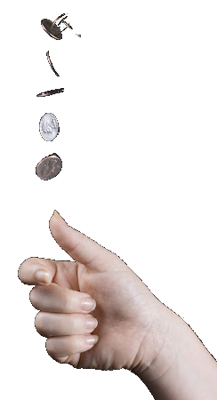
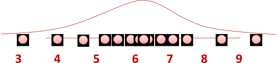

Advanced Machine Learning
09: Maximum Likelihood Estimation
Schedule
| # | date | topic | description |
|---|---|---|---|
| 1 | 22-Aug-2022 | Introduction | |
| 2 | 24-Aug-2022 | Foundations of learning | |
| 3 | 29-Aug-2022 | PAC learnability | |
| 4 | 31-Aug-2022 | Linear algebra (recap) | hw1 released |
| 05-Sep-2022 | Holiday | ||
| 5 | 07-Sep-2022 | Linear learning models | |
| 6 | 12-Sep-2022 | Principal Component Analysis | project ideas |
| 7 | 14-Sep-2022 | Curse of Dimensionality | hw1 due |
| 8 | 19-Sep-2022 | Bayesian Decision Theory | hw2 release |
| 9 | 21-Sep-2022 | Parameter estimation: MLE | |
| 10 | 26-Sep-2022 | Parameter estimation: MAP & NB | finalize teams |
| 11 | 28-Sep-2022 | Logistic Regression | |
| 12 | 03-Oct-2022 | Kernel Density Estimation | |
| 13 | 05-Oct-2022 | Support Vector Machines | hw3, hw2 due |
| 10-Oct-2022 | * Mid-point projects checkpoint | * | |
| 12-Oct-2022 | * Midterm: Semester Midpoint | exam | |
| 14 | 17-Oct-2022 | Matrix Factorization | |
| 15 | 19-Oct-2022 | Stochastic Gradient Descent |
| # | date | topic | description |
|---|---|---|---|
| 16 | 24-Oct-2022 | k-means clustering | |
| 17 | 26-Oct-2022 | Expectation Maximization | hw4, hw3 due |
| 18 | 31-Oct-2022 | Automatic Differentiation | |
| 19 | 02-Nov-2022 | Nonlinear embedding approaches | |
| 20 | 07-Nov-2022 | Model comparison I | |
| 21 | 09-Nov-2022 | Model comparison II | hw5, hw4 due |
| 22 | 14-Nov-2022 | Model Calibration | |
| 23 | 16-Nov-2022 | Convolutional Neural Networks | |
| 21-Nov-2022 | Fall break | ||
| 23-Nov-2022 | Fall break | ||
| 24 | 28-Nov-2022 | Word Embedding | hw5 due |
| 30-Nov-2022 | Presentation and exam prep day | ||
| 02-Dec-2022 | * Project Final Presentations | * | |
| 07-Dec-2022 | * Project Final Presentations | * | |
| 12-Dec-2022 | * Final Exam | * | |
| 15-Dec-2022 | Grades due |
Outline for the lecture
- Independence
- Parameter estimation: MLE
- MLE and KL-divergence
Independence
Independence
Independent random variables: \begin{align} \prob{P}{X,Y} &= \prob{P}{X}\prob{P}{Y}\\ \prob{P}{X|Y} &= \prob{P}{X} \end{align}
- $Y$ and $X$ don't contain information about each other.
- Observing $Y$ does not help predicting $X$.
- Observing $X$ does not help predicting $Y$.
- Examples:
- Independent: winning on roulette this week and next week
- Dependent: Russian roulette
inependent/dependent

Conditionally Independent
Conditionally independent:
$$\prob{P}{X,Y|Z} = \prob{P}{X|Z}\prob{P}{Y|Z}$$ Knowing $Z$ makes $X$ and $Y$ independent
- Examples:
- Dependent: shoe size and reading skills in kids
- Conditionally Independent: shoe size and readnig skills given age
Storks deliver babies: Highly statistically significant correlation ($p=0.008$) exists between stork populations and human birth rates across Europe
Conditionally Independent
London taxi drivers: A survey has pointed out a positive and significant correlation between the number of accidents and wearing coats. They concluded that coats could hinder movements of drivers and be the cause of accidents. A new law was prepared to prohibit drivers from wearing coats when driving.
Finally another study pointed out that people wear coats when it rains...
Correlation $\ne$ Causation
Parameter estimation: MLE
a machine learning problem
Estimating probabilities

Flipping a coin
I have a coin, if I flip it, what's the probability it will fall with head up?
Let us flip it a few times to estimate the probability:
The estimated probability is $\frac{3}{5}$. "Frequency of heads"
Flipping a coin
The estimated probability is $\frac{3}{5}$. "Frequency of heads"
- Why frequency of heads???
- How good is this estimation???
- Why is this a machine learning problem???
Let's go ahead and answer these questions
QUESTION 1: Why frequency of heads???
- Frequency of heads is exactly the maximum likelihood estimator (MLE) for this problem
- MLE has nice properties
- and bad ones too, but that's another story
Maximum Likelihood Estimation
MLE for Bernoulli distribution
Data $D = $ $D = \{x_i\}_{i=1}^n, x_i \in \{\text{H}, \text{T}\}$$\prob{P}{\text{Heads}} = \theta, \prob{P}{\text{Tails}} = 1-\theta$
Flips are i.i.d.:
- Independent events
- Identically distributed according to Bernoulli distribution
MLE: Choose $\theta$ that maximizes the probability of observed data
Maximum Likelihood Estimation
MLE: Choose $\theta$ that maximizes the probability of observed data
\begin{align}
\hat{\theta}_{MLE}
&\fragment{1}{ = \underset{\theta}{\argmax} \prob{P}{D|\theta}}\\
&\fragment{2}{ = \underset{\theta}{\argmax} \displaystyle{\prod_{i=1}^n}\prob{P}{x_i|\theta} \color{#dc322f}{\text{ independent draws}}}\\
&\fragment{3}{ = \underset{\theta}{\argmax} \displaystyle{\prod_{i:x_i=H}^{\alpha_H}}\theta \displaystyle{\prod_{j:x_j=T}^{\alpha_T}}(1-\theta) \color{#dc322f}{\stackrel{\text{identically}}{\text{distributed}}}}\\
&\fragment{4}{ = \underset{\theta}{\argmax} \theta^{\alpha_H} (1-\theta)^{\alpha_T}}\\
\end{align}
$J(\theta) = \theta^{\alpha_H} (1-\theta)^{\alpha_T}$
MLE: Choose $\theta$ that maximizes the probability of observed data
\begin{align}
\hat{\theta}_{MLE} & = \underset{\theta}{\argmax} \prob{P}{D|\theta}\\
J(\theta) & = \theta^{\alpha_H} (1-\theta)^{\alpha_T}\\
\frac{\partial J(\theta)}{\partial \theta} &= \alpha_H \theta^{\alpha_H-1} (1-\theta)^{\alpha_T} - \alpha_T \theta^{\alpha_H} (1-\theta)^{\alpha_T-1} \stackrel{\text{set}}{=} 0
\end{align}
\begin{align}
(\alpha_H(1 - \theta) - \alpha_T\theta)\theta^{\alpha_h-1}(1-\theta)^{\alpha_T-1} &= 0\\
\alpha_H(1 - \theta) - \alpha_T\theta &= 0\\
\hat{\theta}_{MLE} &= \frac{\alpha_H}{\alpha_H + \alpha_T}\\
\end{align}
That's exactly "Frequency of heads"
Flipping a coin
The estimated probability is $\frac{3}{5}$. "Frequency of heads"
- Why frequency of heads???
- How good is this estimation???
- Why is this a machine learning problem???
Question2: How good is this estimation???
$$ \hat{\theta}_{MLE} = \frac{\alpha_H}{\alpha_H + \alpha_T} $$How many flips do I need ?
- I flipped the coins 5 times: 3 heads, 2 tails $$ \hat{\theta}_{MLE} = \frac{3}{5} $$
- What if I flipped 26 heads and 24 tails? $$ \hat{\theta}_{MLE} = \frac{26}{50} $$
Which estimator should we trust more?
Simple bound
Let $\theta^*$ be the true parameter.
For $n = \alpha_H + \alpha_T$, and $\hat{\theta}_{MLE} = \frac{\alpha_H}{\alpha_H + \alpha_T}$
For any $\epsilon \gt 0$:
Hoeffding's inequality:
\begin{align} \prob{P}{|\hat{\theta} - \theta^*| \ge \epsilon} \le 2e^{-2n\epsilon^2} \end{align}
PAC learning
I want to know the coin parameter $\theta$, within $\epsilon = 0.1$ error with probability at least $1-\delta = 0.95$- How many flips do I need?
- \begin{align} \prob{P}{|\hat{\theta} - \theta^*| \ge \epsilon} & \le 2e^{-2n\epsilon^2} \le \delta \end{align}
- How many samples do I need?
- \begin{align} n & \ge \frac{\ln (2/\delta)}{2\epsilon^2} \approx 185 \end{align}
Flipping a coin
The estimated probability is $\frac{3}{5}$. "Frequency of heads"
- Why frequency of heads???
- How good is this estimation???
- Why is this a machine learning problem???
Question2: Why is this an ML problem???
Machine Learning is the study of algorithms that
- improve their performance
- at some task
- with experience
- improves: accuracy of the predicted probability
- task: predicting the probability of heads
- experience: the more flips the better the estimate
What about continuous features?
Let us try Gaussians...\begin{align} \prob{p}{x|\mu,\sigma} &= \frac{1}{\sqrt{2\pi\sigma^2}} e^{-\frac{(x-\mu)^2}{2\sigma^2}} = {\cal N}_x(\mu, \sigma) \end{align}
MLE for Gaussian $\mu$ and $\sigma^2$
$\theta = (\mu, \sigma^2)$ that maximizes the probability of observed data \begin{align} \hat{\theta}_{MLE} & = \underset{\theta}{\argmax} \prob{P}{D|\theta}\\ & = \underset{\theta}{\argmax} \displaystyle{\prod_{i=1}^n}\prob{P}{x_i|\theta} \color{#dc322f}{\text{ independent draws}}\\ & = \underset{\theta}{\argmax} \displaystyle{\prod_{i=1}^n} \frac{1}{\sqrt{2\pi\sigma^2}} e^{-\frac{(x_i-\mu)^2}{2\sigma^2}} \color{#dc322f}{\text{ i.i.d}}\\ & = \underset{\theta}{\argmax} \frac{1}{\sqrt{2\pi\sigma^2}} e^{-\frac{\sum_{i=1}^n(x_i-\mu)^2}{2\sigma^2}}\\ \end{align}Derive $\hat{\mu}_{MLE}$
MLE for Gaussian $\mu$ and $\sigma^2$
\begin{align} \hat{\mu}_{MLE} &= \frac{1}{n} \displaystyle\sum_{i=1}^n x_i\\ \hat{\sigma}^2_{MLE} &= \frac{1}{n} \displaystyle\sum_{i=1}^n (x_i - \hat{\mu}_{MLE})^2\\ \end{align}
MLE for $\sigma^2$ of a Gaussian is biased: expected result of estimation is not the true parameter! $$\hat{\sigma}^2_{unbiased} = \frac{1}{n-1} \displaystyle\sum_{i=1}^n (x_i - \hat{\mu}_{MLE})^2$$
Refresher: Exponential Family
MLE and KL-divergence
How to measure Information
- Messages are strings of characters from a fixed alphabet.
- The amount of information contained in a message should be a function of the total number of possible messages.
- If you have an alphabet with $s$ symbols, then there are $s^\ell$ messages of length, $\ell$.
- The amount of information contained in two messages should be the sum of the information contained in the individual messages.
- The amount of information in $\ell$ messages of length one should equal the amount of information in one message of length $\ell$.
Hartley's Information (1928)
The only function which satisfies these requirements: \[ \ell \log(s) = \log(s^\ell) \]
Shannon's entropy (1948)
Let $X$ be a discrete random variable with $n$ outcomes, $\{x_1,...,x_n\}$. The probability that the outcome will be $x_i$ is $p(x_i)$. Theaverage information (orentropy ) contained in a message about the outcome of $X$ is:
\[ H_p = -\sum_{i=1}^n p_X(x_i) \log p_X(x_i) \]
Cross Entropy
\[ H_{p,q} = -\sum_{i=1}^n p_X(x_i) \log q_X(x_i) \]
Kullback-Leibler (KL) divergence
\[ D_{\rm KL} (P\|Q) = \int P(x) \log \frac{P(x)}{Q(x)} \]
\[ D_{\rm KL} (P\|Q) = \EE_{X\sim P} \left[ \log \frac{P(x)}{Q(x)} \right] \]
\[
D_{\rm KL} (P\|Q) = \EE_{X\sim P} \log P(x) - \EE_{X\sim P} \log Q(x)
\]
KL divergence is not symmetric

MLE is KL-divergence minimization
- $ \hat{\theta}_{MLE} = \underset{\theta}{\argmax} \prob{Q}{D|\theta} $
- $ \hat{\theta}_{MLE} = \underset{\theta}{\argmax} \prod_{i=1}^{n} \prob{Q}{x_i|\theta} $
- $ \hat{\theta}_{MLE} = \underset{\theta}{\argmax} \sum_{i=1}^{n} \log \prob{Q}{x_i|\theta} $
- $ \hat{\theta}_{MLE} = \underset{\theta}{\argmax} \EE_{X\sim P} \log \prob{Q}{X|\theta} $
- $ D_{\rm KL} (P\|Q) = \EE_{X\sim P} \log P(x) - \EE_{X\sim P} \log Q(x) $